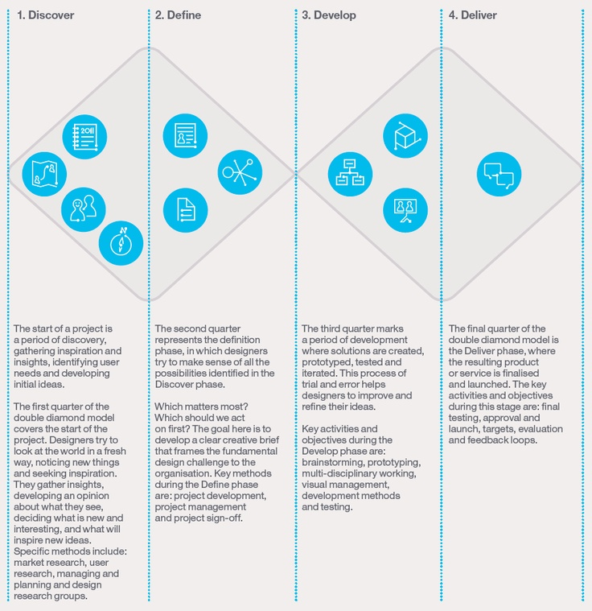

《连线》杂志上一篇《Why Airbnb’s New Head of Design Believes ‘Design-Led’ Companies Don’t Work》文奇怪地戳中了大家，纷纷附和并把话题延伸到对设计思维的反对，这也引发了我对设计思维的重新思考。
隐喻
理解任何一个思维方式往往通过某种隐喻，最早我对设计思维的理解并不来自于Don Norman的文章，而是Henry Mintzberg在1987年HBR上的一篇文章《Crafting Strategy》，这篇文章并没有谈到设计，而是谈论战略在执行过程中如何避免失真和有效落地。
作者在一开始谈到了他陶艺师的妻子制作陶土瓶子的过程，在这个过程中她的行为有下面的行为特征：
- 在转盘前不断按照脑中的想法打磨作品；
- 角度过大的时候陶泥可能塌陷，她会最短的时间补泥进行修复；
- 她的手上沾满了泥土；
而在传统的战略执行过程中，这三种行特征都不满足：
- 想法只存在于PPT或者会议记录中，规划往往是线性的，而没有打磨过程；
- 战略执行的失败过程往往很长，失败的成本也非常高；
- 制定战略的人的手，“往往十分干净”；
这个隐喻在最开始启发了我传统设计过程也是同样：
- 想法只存在于设计稿，有较长和线性的设计流程；
- 设计执行的过程往往很长，到最后推翻设计的成本极高；
- 设计师往往不懂产品是怎样制造出来的；
另一个方面，对于Crafting（匠艺）这个词也有其特殊的含义，任何一个匠人（Craftman）传统上来说都要超越设计师的范畴，他们需要：
- 管理自己的品牌
- 经验自己的店铺
- 建立和管理自己的客户
- 植入自己的深意和理念
- 熟悉原材料和不断尝试新的原材料
- 自己制作和打磨产品
- 自己展示和销售产品
因此在匠人（包括陶艺师）的世界中，仅仅设计是远远不够的，它只是大格局中的一部分而已。
从匠人到设计思维
匠人是单人单骑、独立的、难以规模化的商业模式，在规模化生产、资本游戏的大格局中逐渐被边缘化，更加个性化的产品和独特的客户关系渐渐被统一化的消费产品、以及越来越不忠诚的客户关系所取代，这是资本主义游戏带来的结果。
而市场格局又在近30年发生一些变化，例如：追求个性化的诉求、独特社会标识（Social Identify）的要求、多变的用户需求，这个大趋势下新的产业思潮在不同领域开始出现，如精益制造之于汽车业、敏捷软件开发之于企业级软件开发、极限编程之于软件工程、稻盛和夫的阿米巴原虫体系之于企业经营，这些思潮以及对应的实践都离不开以下模式：
- 更短交付周期和减少库存
- 更低成本的测试和验证
- 用正确的方法做正确的事
- 拥抱变化
- 到客户那里去
- 协作让每个人了解全局
- 每个人都为经营负责
当你仔细思考这些模式的时候，你会发现“匠人的经营和生产方式”在影响着新的产业实践，同样在设计领域，这样的影响也出现了，这就是“设计思维”。设计思维中提倡的问问题而不是急于解决问题、尽可能地寻找多种解决方案、考虑更多的因素如商业、人文、技术等都和之前提到的思潮契合。
设计思维只是一种方法
但是遗憾地是，“设计思维”并没有先天条件成为一种“迷思级（Myth）”的东西，而只是一个工具。迷思是思想级别的升华，并可以延伸到各个领域，例如之前《自我成长时考虑精益的方式》一文中，精益思想可以作为指导个人成长的思想工具，而“设计思维”缺少在除设计领域之外类似的案例。
连Don Norman本人也在重新思考设计思维的定位，他在2010年一篇文章《Design Thinking: A Useful Myth》中提出设计思维是一种Myth，而到2013年的《Rethinking Design Thinking》中他明确地说：
I still stand by the major points of the earlier essay, but I have changed the conclusion. As a result, the essay should really be titled: Design Thinking: An Essential Tool
Norman老师确实被另外一篇挑战设计思维的文章《Design Thinking: Dear Don . . .》所影响，作者明确指出设计思维是一个有具体使用场景的工具，它依靠直觉和逻辑相互作用的方式把不同背景的参与者引入到设计过程用于解决系统性的设计问题。那么设计思维中最尊崇的双菱形模型（下图）、和OIPT(Obervation, Ideation, Prototype, Test)流程便有它特定的场景：
It is a description of the application of well-tried design process to new challenges and opportunities, used by people from both design and non-design backgrounds.

当你明白它的定义之后，也将明白什么样的反对是值得讨论的，什么样的反对是没有意义的。
我们应该反对什么？
既然设计思维不是一个思想，那么反对一个工具一定要考虑它的使用上下文。Norman老师是设计教育的先驱者之一，设计思维之所以被他所推崇是因为在设计教育领域里面，他发现设计学生：
...were acting mindlessly, simply doing their assignments as presented. No creativity, no imagination, no questioning.
于是乎设计思维的工具告诉大家“不要急于开始设计解决方案，也不要基于决定解决方案”，在设计教育的上下文中，是说的通的。
甚至在许多设计工作场合，设计思维也是很好的工具，它帮助你学会问问题、学会和不同背景角色进行协作、在更广的格局中谈论问题。它在最大程度上帮助不同设计能力、不同背景的人一起进行设计协作，但这并不意味的结果便是伟大的设计，而结果不是伟大的设计，或者伟大的设计都不来自设计思维，不能成为反对设计思维的理由，这在逻辑上不通，因为设计思维作为一种工具不是为“伟大（或成功的）设计”准备的，同时这种工具本身就不可能存在。
但是，我们可以反对的，是把“设计思维”当成金科玉律的银弹，鼓吹设计思维的作用，而不告诉设计思维形成的来龙去脉，以及产生作用的上下文。
回到Airbnb的故事
让我们回到Airbnb的故事，这个故事其实并没有说Design-led本身有什么问题，Airbnb所做的事情是：
actually deemphasizes the designers.
当产生独特的设计师文化时，设计师被中心化，其他角色的员工不能产生对用户和产品的同理心，而把它们当成是设计师（特别是那些设计师很酷的时候）的职责，这才是Airbnb所担忧的事情。
这个选择像极了当年乔布斯裁撤苹果用户研究部门的举动，很多人理解为“研究无用”，而苹果的真实动机是不希望让研究这件事情被一个部门所垄断。
无论是近几年大谈的设计思维还是所谓Design-led，任何一个概念出现了一段时间，很多人就会产生直觉的抵触，而事实上第一时间所产生的直觉大多时候要么是不理性地望文生义，要么是抛开上下文来下决断，二者都是不可取的。
写在最后
在我的上下文里，设计思维是我工作的一部分，所有的设计决策都由和客户一起共同完成，但并不是所有工作场景我都会执着于某个流程和方法。
设计思维至少有以下弊端：
- 你也许用最高效的方式设计出一个最平庸的设计；
- 你享受和客户的互动多过产品本身的打磨；
- 你执着于寻找你已经知道答案的问题；
- 你更容易为现实所妥协；
但是，在不同上下文中这些弊端可能又变成优势：
- 也许产出结果比质量更加重要；
- 也许一个长期的合作客户互动更加重要；
- 也许获得已知答案的过程本身只是为了客户互动；
- 也许妥协和克制才是商业成功的要素。
总之，方法只是方法，懂得方法产生的来龙去脉、了解方法使用的上下文、并学会审时度势才是真正理解设计思维。此点对任何一种设计思想或者方法都一样。